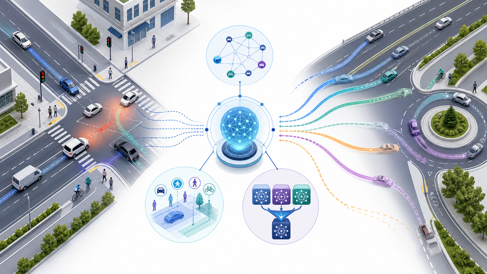
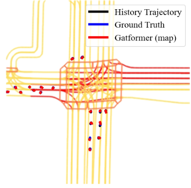
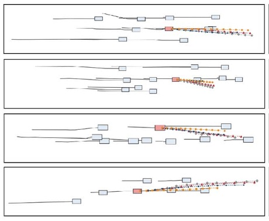
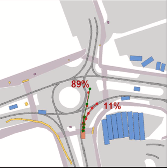
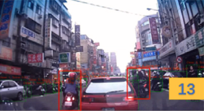
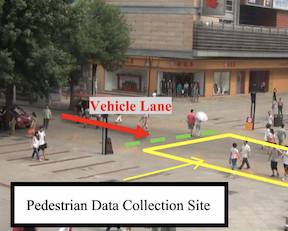

AI-Powered Motion Forecasting for Autonomous Driving
Overview
Accurate motion prediction is essential for safe and reliable autonomous driving, especially at intersections, where vehicles, cyclists, pedestrians, traffic signals, and road geometry create dense, highly interactive, and uncertain conflict patterns. Anticipating the future paths of multiple traffic agents allows an autonomous vehicle to achieve early conflict detection, plan safe and smooth maneuvers, and remain robust in rare, safety-critical corner cases that are often underrepresented in training data.
Our studies develop increasingly context-aware motion forecasting methods for autonomous driving, with intersection conflict as an important—though not exclusive—application. Gatformer represents a traffic scene as a sparse graph and combines spatial encoding, graph attention, and a Transformer to capture agent–agent and agent–infrastructure interactions and predict multiple trajectories simultaneously[1]. CoT-Drive uses LLMs and chain-of-thought prompting to generate semantic scene annotations, then distills this knowledge into lightweight language models for real-time forecasting across highways, urban roads, and complex intersections[2]. WM-MoE targets rare corner cases through a world model that unifies perception, temporal memory, and counterfactual decision-making, together with a mixture of experts that specializes prediction across different interaction regimes[3]. We further extend forecasting toward safety-critical intent and event anticipation: ROAR combines multi-resolution wavelet features, object-aware temporal reasoning, and dynamic focal loss to anticipate accidents despite noisy or incomplete sensor data[4], while a gradient-boosting model uses observed trajectories to predict whether pedestrians will wait or cross at unsignalized crosswalks[5].

Publications




